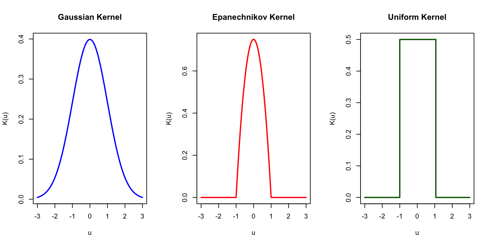
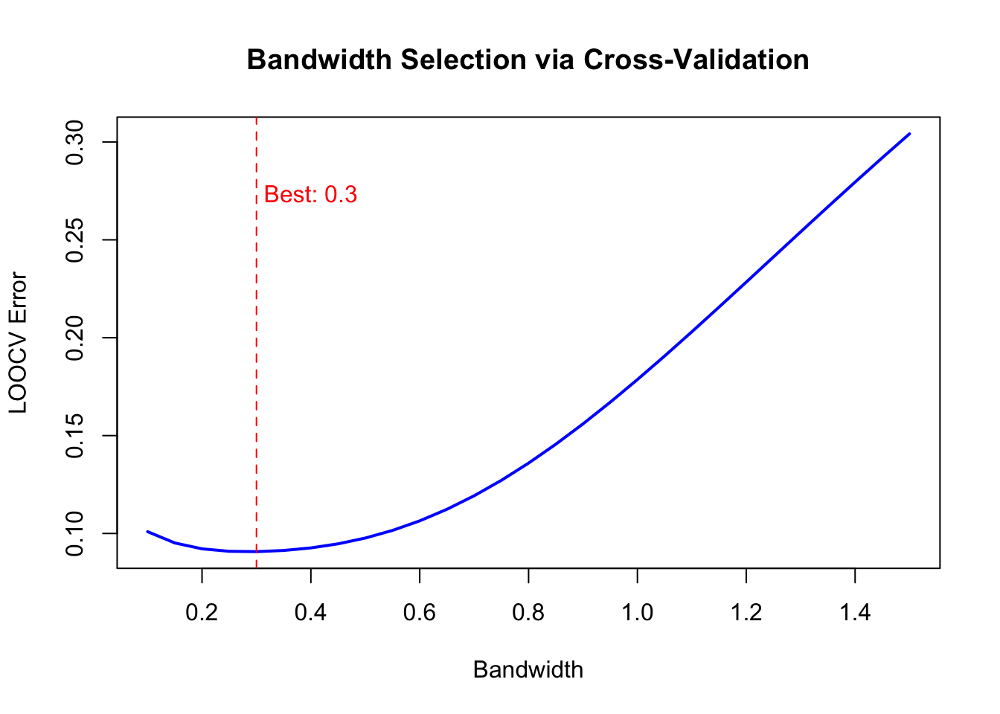
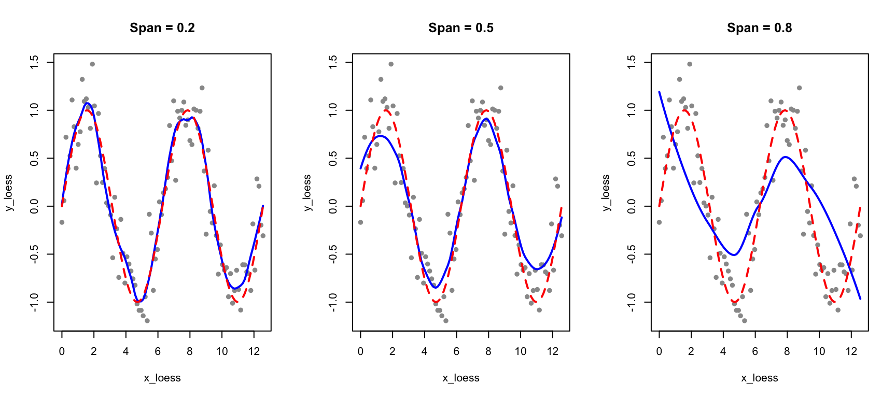
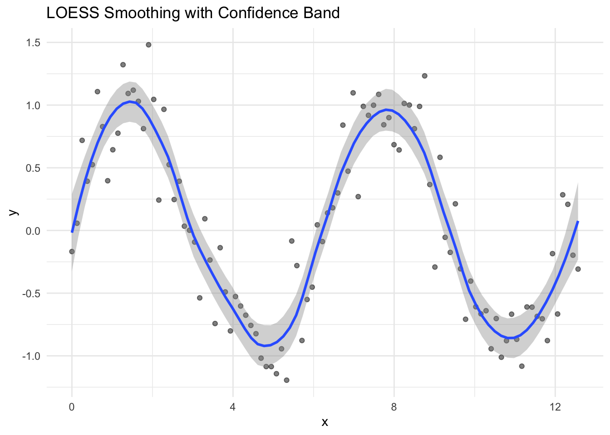
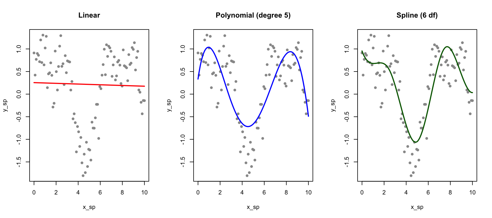

Linear regression assumes a straight-line relationship between predictors and outcomes. But biological relationships are often curved. Enzyme kinetics follow Michaelis-Menten saturation curves. Growth rates change non-linearly with temperature, typically rising to an optimum before declining. Dose-response relationships are usually sigmoidal, with little effect at low doses, rapid change in the middle range, and saturation at high doses. Gene expression over time often shows complex patterns that no simple function could describe.
When the relationship between a predictor and outcome is non-linear, we need methods more flexible than linear regression. Smoothing methods estimate curves by averaging nearby observations, allowing the data to reveal its own pattern.
33.2 From Simple Averages to Flexible Curves
The fundamental idea behind smoothing is simple: estimate the value at a point by averaging nearby observations. The challenge is defining “nearby” and deciding how to weight different observations.
Bin Smoothing
The simplest smoothing approach is bin smoothing (also called binning): divide the predictor into intervals (bins) and estimate the outcome as the average within each bin.
Code
# Generate non-linear dataset.seed(42)n <-200x <-runif(n, 0, 10)y <-sin(x) +rnorm(n, sd =0.3)# Bin smoothing with different bin widthspar(mfrow =c(1, 2))# Narrow binsn_bins <-20breaks <-seq(min(x), max(x), length.out = n_bins +1)bin_means <-sapply(1:n_bins, function(i) { in_bin <- x >= breaks[i] & x < breaks[i +1]if (sum(in_bin) >0) mean(y[in_bin]) elseNA})bin_centers <- (breaks[-1] + breaks[-(n_bins +1)]) /2plot(x, y, pch =16, col ="gray60", main ="Narrow bins (20)")points(bin_centers, bin_means, col ="blue", pch =19, cex =1.5)lines(bin_centers, bin_means, col ="blue", lwd =2)# Wide binsn_bins <-5breaks <-seq(min(x), max(x), length.out = n_bins +1)bin_means <-sapply(1:n_bins, function(i) { in_bin <- x >= breaks[i] & x < breaks[i +1]if (sum(in_bin) >0) mean(y[in_bin]) elseNA})bin_centers <- (breaks[-1] + breaks[-(n_bins +1)]) /2plot(x, y, pch =16, col ="gray60", main ="Wide bins (5)")points(bin_centers, bin_means, col ="red", pch =19, cex =1.5)lines(bin_centers, bin_means, col ="red", lwd =2)
Figure 33.1: Bin smoothing divides data into intervals and estimates each segment as the mean of points in that bin
Bin smoothing illustrates the bias-variance tradeoff that pervades all smoothing methods. Narrow bins capture local variation—they have low bias because they can follow the data closely, but they are noisy with high variance because each bin contains few observations. Wide bins smooth over the noise, achieving low variance, but they may miss true curvature in the relationship, resulting in high bias.
The main limitation of bin smoothing is the discontinuity at bin boundaries—the estimate jumps abruptly from one bin to the next rather than varying smoothly.
33.3 Kernel Smoothing
Kernel smoothing improves on binning by using weighted averages, where closer points receive more weight. This creates smooth, continuous estimates.
where \(K\) is a kernel function (typically Gaussian or Epanechnikov) and \(h\) is the bandwidth controlling smoothness.
The Kernel Function
The choice of kernel function determines how weights decline with distance. The Gaussian kernel, \(K(u) = \exp(-u^2/2)\), assigns weight that falls off smoothly according to the normal distribution—observations very far away still receive some weight, but it becomes negligible. The Epanechnikov kernel, \(K(u) = \frac{3}{4}(1-u^2)\) for \(|u| \leq 1\), is parabolic within a fixed window and gives exactly zero weight to observations outside that window. The Uniform kernel, \(K(u) = 1\) for \(|u| \leq 1\), gives equal weight to all observations within the window and zero weight outside, which reduces to bin smoothing. In practice, the choice of kernel matters less than the choice of bandwidth—most kernels produce similar results for a given level of smoothness.
Code
u <-seq(-3, 3, length.out =100)par(mfrow =c(1, 3))# Gaussianplot(u, dnorm(u), type ="l", lwd =2, col ="blue",main ="Gaussian Kernel", xlab ="u", ylab ="K(u)")# Epanechnikovepan <-ifelse(abs(u) <=1, 0.75* (1- u^2), 0)plot(u, epan, type ="l", lwd =2, col ="red",main ="Epanechnikov Kernel", xlab ="u", ylab ="K(u)")# Uniformunif <-ifelse(abs(u) <=1, 0.5, 0)plot(u, unif, type ="s", lwd =2, col ="darkgreen",main ="Uniform Kernel", xlab ="u", ylab ="K(u)")

Figure 33.2: Common kernel functions used in kernel smoothing
Effect of Bandwidth
Code
# Kernel smoothing functionkernel_smooth <-function(x0, x, y, bandwidth) { weights <-dnorm(x, mean = x0, sd = bandwidth)sum(weights * y) /sum(weights)}# Apply to grid of pointsx_grid <-seq(0, 10, length.out =200)par(mfrow =c(1, 3))for (bw inc(0.2, 0.5, 1.0)) { y_smooth <-sapply(x_grid, function(x0) kernel_smooth(x0, x, y, bw))plot(x, y, pch =16, col ="gray60", main =paste("Bandwidth =", bw))lines(x_grid, y_smooth, col ="blue", lwd =2)lines(x_grid, sin(x_grid), col ="red", lwd =2, lty =2)legend("topright", c("Kernel smooth", "True function"),col =c("blue", "red"), lty =c(1, 2), lwd =2, cex =0.7)}
Figure 33.3: Kernel smoothing uses weighted averages with Gaussian weights. The bandwidth controls the degree of smoothing.
The bandwidth parameter plays the same role as the number of bins in controlling the bias-variance tradeoff. A small bandwidth makes the estimate more local—it follows the data closely but risks overfitting to noise in the training observations. A large bandwidth produces a smoother curve by averaging over more observations, but risks over-smoothing and missing genuine features of the underlying relationship.
Kernel smoothing eliminates the discontinuity problem of bin smoothing while retaining its intuitive local-averaging interpretation.
Bandwidth Selection
Bandwidth can be chosen by cross-validation:
Code
# Leave-one-out CV for bandwidth selectionbandwidths <-seq(0.1, 1.5, by =0.05)cv_errors <-sapply(bandwidths, function(bw) { errors <-sapply(1:n, function(i) {# Leave out observation i y_pred <-kernel_smooth(x[i], x[-i], y[-i], bw) (y[i] - y_pred)^2 })mean(errors)})plot(bandwidths, cv_errors, type ="l", lwd =2, col ="blue",xlab ="Bandwidth", ylab ="LOOCV Error",main ="Bandwidth Selection via Cross-Validation")best_bw <- bandwidths[which.min(cv_errors)]abline(v = best_bw, lty =2, col ="red")text(best_bw +0.1, max(cv_errors) *0.9, paste("Best:", round(best_bw, 2)), col ="red")

Figure 33.4: Cross-validation error as a function of bandwidth for kernel smoothing
33.4 LOESS: Local Polynomial Regression
LOESS (Locally Estimated Scatterplot Smoothing) (Cleveland 1979) fits local polynomial regressions to subsets of data, weighted by distance from each point. It extends kernel smoothing by fitting a polynomial (rather than a constant) at each point.
Code
# Generate sinusoidal dataset.seed(123)x_loess <-seq(0, 4*pi, length.out =100)y_loess <-sin(x_loess) +rnorm(100, sd =0.3)plot(x_loess, y_loess, pch =16, col ="gray60", main ="Linear vs LOESS")abline(lm(y_loess ~ x_loess), col ="red", lwd =2)lines(x_loess, predict(loess(y_loess ~ x_loess, span =0.3)), col ="blue", lwd =2)legend("topright", c("Linear", "LOESS"), col =c("red", "blue"), lwd =2)
Figure 33.5: Comparison of linear regression and LOESS smoothing for non-linear data
The Span Parameter
The span parameter controls smoothness: smaller values fit more locally (more flexible), larger values average more broadly (smoother).
Code
par(mfrow =c(1, 3))for (sp inc(0.2, 0.5, 0.8)) { loess_fit <-loess(y_loess ~ x_loess, span = sp)plot(x_loess, y_loess, pch =16, col ="gray60", main =paste("Span =", sp))lines(x_loess, predict(loess_fit), col ="blue", lwd =2)lines(x_loess, sin(x_loess), col ="red", lwd =2, lty =2)}

Figure 33.6: Effect of span on LOESS smoothing: smaller span fits data more closely, larger span produces smoother curves
LOESS in ggplot2
LOESS is the default smoother in ggplot2:
Code
data.frame(x = x_loess, y = y_loess) |>ggplot(aes(x, y)) +geom_point(alpha =0.5) +geom_smooth(method ="loess", span =0.3, se =TRUE) +labs(title ="LOESS Smoothing with Confidence Band")

Figure 33.7: LOESS smoothing with confidence bands in ggplot2
33.5 Splines: Piecewise Polynomials
While LOESS provides local smoothing, splines offer a more structured approach to fitting flexible curves. A spline is a piecewise polynomial function that joins smoothly at points called knots.
Why Splines?
Linear regression assumes a straight-line relationship, which is often too restrictive. We could fit polynomial regression (e.g., \(y = \beta_0 + \beta_1 x + \beta_2 x^2 + \beta_3 x^3\)), but polynomials can behave erratically, especially at the edges of the data.
Splines provide flexibility while maintaining smooth, well-behaved curves.
Regression Splines
Regression splines fit piecewise polynomials at fixed knot locations. The splines package provides basis functions for incorporating splines into linear models:
Code
# Generate non-linear dataset.seed(42)x_sp <-seq(0, 10, length.out =100)y_sp <-sin(x_sp) +0.5*cos(2*x_sp) +rnorm(100, sd =0.3)data_sp <-data.frame(x = x_sp, y = y_sp)# Fit different modelsfit_linear <-lm(y ~ x, data = data_sp)fit_poly <-lm(y ~poly(x, 5), data = data_sp)fit_spline <-lm(y ~bs(x, df =6), data = data_sp) # B-spline with 6 df# Predictionsdata_sp$pred_linear <-predict(fit_linear)data_sp$pred_poly <-predict(fit_poly)data_sp$pred_spline <-predict(fit_spline)par(mfrow =c(1, 3))plot(x_sp, y_sp, pch =16, col ="gray60", main ="Linear")lines(x_sp, data_sp$pred_linear, col ="red", lwd =2)plot(x_sp, y_sp, pch =16, col ="gray60", main ="Polynomial (degree 5)")lines(x_sp, data_sp$pred_poly, col ="blue", lwd =2)plot(x_sp, y_sp, pch =16, col ="gray60", main ="Spline (6 df)")lines(x_sp, data_sp$pred_spline, col ="darkgreen", lwd =2)

Figure 33.8: Comparison of linear, polynomial, and spline fits for non-linear data
B-Splines and Natural Splines
B-splines (bs()) are a flexible basis for regression splines. You control their flexibility by specifying either the degrees of freedom (df) or the number and location of knots directly. Higher degrees of freedom allow more complex curves.
Natural splines (ns()) add the constraint that the function is linear beyond the boundary knots. This prevents the wild behavior that polynomials often exhibit at the edges of the data range, where extrapolation can produce unrealistic predictions:
Code
# Compare B-spline and natural splinefit_bs <-lm(y ~bs(x, df =6), data = data_sp)fit_ns <-lm(y ~ns(x, df =6), data = data_sp)# Extend prediction range to see edge behaviorx_ext <-seq(-2, 12, length.out =200)pred_bs <-predict(fit_bs, newdata =data.frame(x = x_ext))pred_ns <-predict(fit_ns, newdata =data.frame(x = x_ext))plot(x_sp, y_sp, pch =16, col ="gray60", xlim =c(-2, 12), ylim =c(-3, 3),main ="B-spline vs Natural Spline at Boundaries")lines(x_ext, pred_bs, col ="blue", lwd =2)lines(x_ext, pred_ns, col ="darkgreen", lwd =2)abline(v =range(x_sp), lty =2, col ="gray")legend("topright", c("B-spline", "Natural spline", "Data range"),col =c("blue", "darkgreen", "gray"), lty =c(1, 1, 2), lwd =c(2, 2, 1))
Figure 33.9: Natural splines constrain the fit to be linear beyond the data boundaries, reducing edge effects
Choosing Degrees of Freedom
The degrees of freedom control spline flexibility:
Code
par(mfrow =c(1, 3))for (df_val inc(3, 6, 10)) { fit <-lm(y ~ns(x, df = df_val), data = data_sp)plot(x_sp, y_sp, pch =16, col ="gray60", main =paste("df =", df_val))lines(x_sp, predict(fit), col ="darkgreen", lwd =2)}
Figure 33.10: Effect of degrees of freedom on spline flexibility
33.6 Smoothing Splines
Smoothing splines take a different approach: instead of pre-specifying knots, they place a knot at every data point and control smoothness through a penalty on the second derivative:
The first term measures fit to the data; the second penalizes curvature. The smoothing parameter \(\lambda\) controls the tradeoff between these objectives. When \(\lambda = 0\), there is no curvature penalty, and the spline interpolates through every data point, producing a maximally wiggly curve. As \(\lambda\) increases toward infinity, the curvature penalty dominates, forcing the second derivative toward zero everywhere—the result approaches a straight line with no curvature at all.
Code
# Fit smoothing spline with cross-validationsmooth_fit <-smooth.spline(x_sp, y_sp, cv =TRUE)plot(x_sp, y_sp, pch =16, col ="gray60", main ="Smoothing Spline")lines(smooth_fit, col ="purple", lwd =2)cat("Optimal degrees of freedom:", round(smooth_fit$df, 2), "\n")
Optimal degrees of freedom: 14.81
Figure 33.11: Smoothing spline with automatic cross-validation selection of the smoothing parameter
Figure 33.13: Generalized Additive Model fits smooth functions of multiple predictors
33.8 Comparing Smoothing Methods
Method
Approach
Parameters
Best For
Bin smoothing
Average within intervals
Number of bins
Quick exploration
Kernel smoothing
Weighted local average
Bandwidth
Smooth curves, one predictor
LOESS
Local polynomial regression
Span
Visualization, ggplot2
Regression splines
Piecewise polynomials
df or knots
Including in regression models
Smoothing splines
Penalized fitting
λ (automatic via CV)
Automatic smoothing
GAM
Additive smooth functions
df per predictor
Multiple non-linear predictors
Choosing the Right Approach
The choice among smoothing methods depends on your analytical goals. Regression splines using bs() or ns() are ideal when you want to include non-linear terms in a regression model alongside other predictors—the spline basis functions become ordinary predictors that can be combined with linear terms, factors, and interactions. Natural splines are preferred when extrapolation behavior matters, since they remain linear beyond the data boundaries.
Smoothing splines excel at exploratory analysis because they automatically select an appropriate degree of smoothness through cross-validation, freeing you from having to choose knot locations. LOESS is particularly useful for visualization, which is why it’s the default smoother in ggplot2—it provides smooth, attractive curves with minimal tuning. Finally, GAMs are the method of choice when you have multiple predictors that may each have non-linear effects on the outcome.
33.9 Practical Considerations
Cross-Validation for Parameter Selection
All smoothing methods have a smoothness parameter. Cross-validation provides an objective way to choose it:
Code
# Example: CV for number of knots in regression splinedf_values <-3:15cv_errors <-sapply(df_values, function(df) {# 10-fold CV folds <-sample(rep(1:10, length.out = n)) fold_errors <-sapply(1:10, function(k) { train <- data_sp[folds != k, ] test <- data_sp[folds == k, ] fit <-lm(y ~ns(x, df = df), data = train)mean((test$y -predict(fit, test))^2) })mean(fold_errors)})cat("Best df by CV:", df_values[which.min(cv_errors)], "\n")
Best df by CV:
Confidence Bands
Smoothing methods can provide uncertainty estimates:
Figure 33.14: LOESS smoothing with confidence band showing uncertainty in the smooth
Extrapolation Warning
Most smoothing methods are designed for interpolation, not extrapolation. Predictions outside the range of the training data should be treated with extreme caution.
33.10 Exercises
Exercise Sm.1: Kernel Smoothing
Generate 100 observations from \(y = x^2 + \epsilon\) where \(x \in [0, 5]\) and \(\epsilon \sim N(0, 1)\).
Implement kernel smoothing with bandwidths of 0.3, 0.6, and 1.0. Compare the fits to the true function.
Use leave-one-out cross-validation to select the optimal bandwidth.
Exercise Sm.2: Spline Comparison
Using the same data, fit:
B-spline with 5 degrees of freedom
Natural spline with 5 degrees of freedom
Smoothing spline with cross-validation
Compare the fits and their behavior at the boundaries.
Exercise Sm.3: GAMs
Generate data with \(y = \sin(x_1) + x_2^2 + x_1 \cdot x_2 + \epsilon\).
Fit a GAM with smooth terms for \(x_1\) and \(x_2\) (ignoring the interaction). Does the model capture the main effects?
How would you modify the model to include an interaction?
33.11 Summary
This chapter introduced smoothing methods for estimating flexible curves without assuming a specific parametric form. These methods let the data reveal its own pattern rather than imposing a predetermined shape.
Bin smoothing takes the simplest approach: divide the data into intervals and compute the average within each bin. While intuitive, bin smoothing produces discontinuous estimates that jump at bin boundaries. Kernel smoothing improves on this by computing weighted averages, where observations closer to the target point receive more weight. The bandwidth parameter controls the bias-variance tradeoff, and cross-validation provides an objective method for selecting it.
LOESS (locally estimated scatterplot smoothing) extends kernel smoothing by fitting local polynomial regressions rather than computing simple weighted averages. The span parameter controls smoothness, and LOESS is the default smoother in ggplot2 because it produces attractive visualizations with minimal tuning.
Regression splines take a different approach: they fit piecewise polynomials that join smoothly at points called knots. B-splines provide a flexible basis that can be incorporated into any regression model, while natural splines add the constraint of linearity beyond the data boundaries to prevent erratic extrapolation. Smoothing splines place a knot at every data point and control flexibility through a penalty on curvature, with the smoothing parameter typically selected automatically through cross-validation.
Generalized Additive Models (GAMs) extend these ideas to multiple predictors, fitting smooth functions of each predictor in an additive framework. All smoothing methods face the fundamental bias-variance tradeoff: more smoothing reduces variance but increases bias. Cross-validation provides a principled way to find the right balance.
33.12 Additional Resources
James et al. (2023) - Moving beyond linearity with splines and GAMs
Hastie, Tibshirani, and Friedman (2009) - Theoretical foundations of smoothing
Cleveland, William S. 1979. “Robust Locally Weighted Regression and Smoothing Scatterplots.”Journal of the American Statistical Association 74 (368): 829–36.
Hastie, Trevor, Robert Tibshirani, and Jerome Friedman. 2009. The Elements of Statistical Learning: Data Mining, Inference, and Prediction. 2nd ed. New York: Springer.
James, Gareth, Daniela Witten, Trevor Hastie, and Robert Tibshirani. 2023. An Introduction to Statistical Learning with Applications in r. 2nd ed. Springer. https://www.statlearning.com.
Source Code
# Smoothing and Non-Parametric Regression {#sec-smoothing}```{r}#| echo: false#| message: falselibrary(tidyverse)library(splines)theme_set(theme_minimal())```## Beyond Linear RelationshipsLinear regression assumes a straight-line relationship between predictors and outcomes. But biological relationships are often curved. Enzyme kinetics follow Michaelis-Menten saturation curves. Growth rates change non-linearly with temperature, typically rising to an optimum before declining. Dose-response relationships are usually sigmoidal, with little effect at low doses, rapid change in the middle range, and saturation at high doses. Gene expression over time often shows complex patterns that no simple function could describe.When the relationship between a predictor and outcome is non-linear, we need methods more flexible than linear regression. **Smoothing** methods estimate curves by averaging nearby observations, allowing the data to reveal its own pattern.## From Simple Averages to Flexible CurvesThe fundamental idea behind smoothing is simple: estimate the value at a point by averaging nearby observations. The challenge is defining "nearby" and deciding how to weight different observations.### Bin SmoothingThe simplest smoothing approach is **bin smoothing** (also called **binning**): divide the predictor into intervals (bins) and estimate the outcome as the average within each bin.```{r}#| label: fig-bin-smoothing#| fig-cap: "Bin smoothing divides data into intervals and estimates each segment as the mean of points in that bin"#| fig-width: 8#| fig-height: 5# Generate non-linear dataset.seed(42)n <-200x <-runif(n, 0, 10)y <-sin(x) +rnorm(n, sd =0.3)# Bin smoothing with different bin widthspar(mfrow =c(1, 2))# Narrow binsn_bins <-20breaks <-seq(min(x), max(x), length.out = n_bins +1)bin_means <-sapply(1:n_bins, function(i) { in_bin <- x >= breaks[i] & x < breaks[i +1]if (sum(in_bin) >0) mean(y[in_bin]) elseNA})bin_centers <- (breaks[-1] + breaks[-(n_bins +1)]) /2plot(x, y, pch =16, col ="gray60", main ="Narrow bins (20)")points(bin_centers, bin_means, col ="blue", pch =19, cex =1.5)lines(bin_centers, bin_means, col ="blue", lwd =2)# Wide binsn_bins <-5breaks <-seq(min(x), max(x), length.out = n_bins +1)bin_means <-sapply(1:n_bins, function(i) { in_bin <- x >= breaks[i] & x < breaks[i +1]if (sum(in_bin) >0) mean(y[in_bin]) elseNA})bin_centers <- (breaks[-1] + breaks[-(n_bins +1)]) /2plot(x, y, pch =16, col ="gray60", main ="Wide bins (5)")points(bin_centers, bin_means, col ="red", pch =19, cex =1.5)lines(bin_centers, bin_means, col ="red", lwd =2)```Bin smoothing illustrates the **bias-variance tradeoff** that pervades all smoothing methods. **Narrow bins** capture local variation—they have low bias because they can follow the data closely, but they are noisy with high variance because each bin contains few observations. **Wide bins** smooth over the noise, achieving low variance, but they may miss true curvature in the relationship, resulting in high bias.The main limitation of bin smoothing is the **discontinuity** at bin boundaries—the estimate jumps abruptly from one bin to the next rather than varying smoothly.## Kernel Smoothing**Kernel smoothing** improves on binning by using weighted averages, where closer points receive more weight. This creates smooth, continuous estimates.The estimate at any point $x_0$ is:$$\hat{f}(x_0) = \frac{\sum_{i=1}^n K\left(\frac{x_i - x_0}{h}\right) y_i}{\sum_{i=1}^n K\left(\frac{x_i - x_0}{h}\right)}$$where $K$ is a **kernel function** (typically Gaussian or Epanechnikov) and $h$ is the **bandwidth** controlling smoothness.### The Kernel FunctionThe choice of kernel function determines how weights decline with distance. The **Gaussian kernel**, $K(u) = \exp(-u^2/2)$, assigns weight that falls off smoothly according to the normal distribution—observations very far away still receive some weight, but it becomes negligible. The **Epanechnikov kernel**, $K(u) = \frac{3}{4}(1-u^2)$ for $|u| \leq 1$, is parabolic within a fixed window and gives exactly zero weight to observations outside that window. The **Uniform kernel**, $K(u) = 1$ for $|u| \leq 1$, gives equal weight to all observations within the window and zero weight outside, which reduces to bin smoothing. In practice, the choice of kernel matters less than the choice of bandwidth—most kernels produce similar results for a given level of smoothness.```{r}#| label: fig-kernel-functions#| fig-cap: "Common kernel functions used in kernel smoothing"#| fig-width: 8#| fig-height: 4u <-seq(-3, 3, length.out =100)par(mfrow =c(1, 3))# Gaussianplot(u, dnorm(u), type ="l", lwd =2, col ="blue",main ="Gaussian Kernel", xlab ="u", ylab ="K(u)")# Epanechnikovepan <-ifelse(abs(u) <=1, 0.75* (1- u^2), 0)plot(u, epan, type ="l", lwd =2, col ="red",main ="Epanechnikov Kernel", xlab ="u", ylab ="K(u)")# Uniformunif <-ifelse(abs(u) <=1, 0.5, 0)plot(u, unif, type ="s", lwd =2, col ="darkgreen",main ="Uniform Kernel", xlab ="u", ylab ="K(u)")```### Effect of Bandwidth```{r}#| label: fig-kernel-smoothing#| fig-cap: "Kernel smoothing uses weighted averages with Gaussian weights. The bandwidth controls the degree of smoothing."#| fig-width: 9#| fig-height: 4# Kernel smoothing functionkernel_smooth <-function(x0, x, y, bandwidth) { weights <-dnorm(x, mean = x0, sd = bandwidth)sum(weights * y) /sum(weights)}# Apply to grid of pointsx_grid <-seq(0, 10, length.out =200)par(mfrow =c(1, 3))for (bw inc(0.2, 0.5, 1.0)) { y_smooth <-sapply(x_grid, function(x0) kernel_smooth(x0, x, y, bw))plot(x, y, pch =16, col ="gray60", main =paste("Bandwidth =", bw))lines(x_grid, y_smooth, col ="blue", lwd =2)lines(x_grid, sin(x_grid), col ="red", lwd =2, lty =2)legend("topright", c("Kernel smooth", "True function"),col =c("blue", "red"), lty =c(1, 2), lwd =2, cex =0.7)}```The **bandwidth** parameter plays the same role as the number of bins in controlling the bias-variance tradeoff. A **small bandwidth** makes the estimate more local—it follows the data closely but risks overfitting to noise in the training observations. A **large bandwidth** produces a smoother curve by averaging over more observations, but risks over-smoothing and missing genuine features of the underlying relationship.Kernel smoothing eliminates the discontinuity problem of bin smoothing while retaining its intuitive local-averaging interpretation.### Bandwidth SelectionBandwidth can be chosen by cross-validation:```{r}#| label: fig-bandwidth-cv#| fig-cap: "Cross-validation error as a function of bandwidth for kernel smoothing"#| fig-width: 7#| fig-height: 5# Leave-one-out CV for bandwidth selectionbandwidths <-seq(0.1, 1.5, by =0.05)cv_errors <-sapply(bandwidths, function(bw) { errors <-sapply(1:n, function(i) {# Leave out observation i y_pred <-kernel_smooth(x[i], x[-i], y[-i], bw) (y[i] - y_pred)^2 })mean(errors)})plot(bandwidths, cv_errors, type ="l", lwd =2, col ="blue",xlab ="Bandwidth", ylab ="LOOCV Error",main ="Bandwidth Selection via Cross-Validation")best_bw <- bandwidths[which.min(cv_errors)]abline(v = best_bw, lty =2, col ="red")text(best_bw +0.1, max(cv_errors) *0.9, paste("Best:", round(best_bw, 2)), col ="red")```## LOESS: Local Polynomial Regression**LOESS** (Locally Estimated Scatterplot Smoothing) [@cleveland1979robust] fits local polynomial regressions to subsets of data, weighted by distance from each point. It extends kernel smoothing by fitting a polynomial (rather than a constant) at each point.```{r}#| label: fig-loess-comparison#| fig-cap: "Comparison of linear regression and LOESS smoothing for non-linear data"#| fig-width: 7#| fig-height: 5# Generate sinusoidal dataset.seed(123)x_loess <-seq(0, 4*pi, length.out =100)y_loess <-sin(x_loess) +rnorm(100, sd =0.3)plot(x_loess, y_loess, pch =16, col ="gray60", main ="Linear vs LOESS")abline(lm(y_loess ~ x_loess), col ="red", lwd =2)lines(x_loess, predict(loess(y_loess ~ x_loess, span =0.3)), col ="blue", lwd =2)legend("topright", c("Linear", "LOESS"), col =c("red", "blue"), lwd =2)```### The Span ParameterThe **span** parameter controls smoothness: smaller values fit more locally (more flexible), larger values average more broadly (smoother).```{r}#| label: fig-loess-span#| fig-cap: "Effect of span on LOESS smoothing: smaller span fits data more closely, larger span produces smoother curves"#| fig-width: 9#| fig-height: 4par(mfrow =c(1, 3))for (sp inc(0.2, 0.5, 0.8)) { loess_fit <-loess(y_loess ~ x_loess, span = sp)plot(x_loess, y_loess, pch =16, col ="gray60", main =paste("Span =", sp))lines(x_loess, predict(loess_fit), col ="blue", lwd =2)lines(x_loess, sin(x_loess), col ="red", lwd =2, lty =2)}```### LOESS in ggplot2LOESS is the default smoother in `ggplot2`:```{r}#| label: fig-ggplot-loess#| fig-cap: "LOESS smoothing with confidence bands in ggplot2"#| fig-width: 7#| fig-height: 5data.frame(x = x_loess, y = y_loess) |>ggplot(aes(x, y)) +geom_point(alpha =0.5) +geom_smooth(method ="loess", span =0.3, se =TRUE) +labs(title ="LOESS Smoothing with Confidence Band")```## Splines: Piecewise PolynomialsWhile LOESS provides local smoothing, **splines** offer a more structured approach to fitting flexible curves. A spline is a piecewise polynomial function that joins smoothly at points called **knots**.### Why Splines?Linear regression assumes a straight-line relationship, which is often too restrictive. We could fit polynomial regression (e.g., $y = \beta_0 + \beta_1 x + \beta_2 x^2 + \beta_3 x^3$), but polynomials can behave erratically, especially at the edges of the data.Splines provide flexibility while maintaining smooth, well-behaved curves.### Regression Splines**Regression splines** fit piecewise polynomials at fixed knot locations. The `splines` package provides basis functions for incorporating splines into linear models:```{r}#| label: fig-spline-comparison#| fig-cap: "Comparison of linear, polynomial, and spline fits for non-linear data"#| fig-width: 9#| fig-height: 4# Generate non-linear dataset.seed(42)x_sp <-seq(0, 10, length.out =100)y_sp <-sin(x_sp) +0.5*cos(2*x_sp) +rnorm(100, sd =0.3)data_sp <-data.frame(x = x_sp, y = y_sp)# Fit different modelsfit_linear <-lm(y ~ x, data = data_sp)fit_poly <-lm(y ~poly(x, 5), data = data_sp)fit_spline <-lm(y ~bs(x, df =6), data = data_sp) # B-spline with 6 df# Predictionsdata_sp$pred_linear <-predict(fit_linear)data_sp$pred_poly <-predict(fit_poly)data_sp$pred_spline <-predict(fit_spline)par(mfrow =c(1, 3))plot(x_sp, y_sp, pch =16, col ="gray60", main ="Linear")lines(x_sp, data_sp$pred_linear, col ="red", lwd =2)plot(x_sp, y_sp, pch =16, col ="gray60", main ="Polynomial (degree 5)")lines(x_sp, data_sp$pred_poly, col ="blue", lwd =2)plot(x_sp, y_sp, pch =16, col ="gray60", main ="Spline (6 df)")lines(x_sp, data_sp$pred_spline, col ="darkgreen", lwd =2)```### B-Splines and Natural Splines**B-splines** (`bs()`) are a flexible basis for regression splines. You control their flexibility by specifying either the degrees of freedom (df) or the number and location of knots directly. Higher degrees of freedom allow more complex curves.**Natural splines** (`ns()`) add the constraint that the function is linear beyond the boundary knots. This prevents the wild behavior that polynomials often exhibit at the edges of the data range, where extrapolation can produce unrealistic predictions:```{r}#| label: fig-natural-spline#| fig-cap: "Natural splines constrain the fit to be linear beyond the data boundaries, reducing edge effects"#| fig-width: 7#| fig-height: 5# Compare B-spline and natural splinefit_bs <-lm(y ~bs(x, df =6), data = data_sp)fit_ns <-lm(y ~ns(x, df =6), data = data_sp)# Extend prediction range to see edge behaviorx_ext <-seq(-2, 12, length.out =200)pred_bs <-predict(fit_bs, newdata =data.frame(x = x_ext))pred_ns <-predict(fit_ns, newdata =data.frame(x = x_ext))plot(x_sp, y_sp, pch =16, col ="gray60", xlim =c(-2, 12), ylim =c(-3, 3),main ="B-spline vs Natural Spline at Boundaries")lines(x_ext, pred_bs, col ="blue", lwd =2)lines(x_ext, pred_ns, col ="darkgreen", lwd =2)abline(v =range(x_sp), lty =2, col ="gray")legend("topright", c("B-spline", "Natural spline", "Data range"),col =c("blue", "darkgreen", "gray"), lty =c(1, 1, 2), lwd =c(2, 2, 1))```### Choosing Degrees of FreedomThe degrees of freedom control spline flexibility:```{r}#| label: fig-spline-df#| fig-cap: "Effect of degrees of freedom on spline flexibility"#| fig-width: 9#| fig-height: 4par(mfrow =c(1, 3))for (df_val inc(3, 6, 10)) { fit <-lm(y ~ns(x, df = df_val), data = data_sp)plot(x_sp, y_sp, pch =16, col ="gray60", main =paste("df =", df_val))lines(x_sp, predict(fit), col ="darkgreen", lwd =2)}```## Smoothing Splines**Smoothing splines** take a different approach: instead of pre-specifying knots, they place a knot at every data point and control smoothness through a penalty on the second derivative:$$\text{Minimize: } \sum_{i=1}^n (y_i - f(x_i))^2 + \lambda \int f''(x)^2 dx$$The first term measures fit to the data; the second penalizes curvature. The smoothing parameter $\lambda$ controls the tradeoff between these objectives. When $\lambda = 0$, there is no curvature penalty, and the spline interpolates through every data point, producing a maximally wiggly curve. As $\lambda$ increases toward infinity, the curvature penalty dominates, forcing the second derivative toward zero everywhere—the result approaches a straight line with no curvature at all.```{r}#| label: fig-smoothing-spline#| fig-cap: "Smoothing spline with automatic cross-validation selection of the smoothing parameter"#| fig-width: 7#| fig-height: 5# Fit smoothing spline with cross-validationsmooth_fit <-smooth.spline(x_sp, y_sp, cv =TRUE)plot(x_sp, y_sp, pch =16, col ="gray60", main ="Smoothing Spline")lines(smooth_fit, col ="purple", lwd =2)cat("Optimal degrees of freedom:", round(smooth_fit$df, 2), "\n")```### Effect of Smoothing Parameter```{r}#| label: fig-smooth-spline-lambda#| fig-cap: "Effect of smoothing parameter on smoothing splines. The spar parameter controls smoothness."#| fig-width: 9#| fig-height: 4par(mfrow =c(1, 3))for (spar_val inc(0.2, 0.5, 0.8)) { fit <-smooth.spline(x_sp, y_sp, spar = spar_val)plot(x_sp, y_sp, pch =16, col ="gray60",main =paste("spar =", spar_val, "(df ≈", round(fit$df, 1), ")"))lines(fit, col ="purple", lwd =2)}```## Generalized Additive Models (GAMs)**Generalized Additive Models** extend smoothing to multiple predictors. Instead of assuming linearity, GAMs fit smooth functions of each predictor:$$y = \beta_0 + f_1(x_1) + f_2(x_2) + \cdots + f_p(x_p) + \epsilon$$where each $f_j$ is a smooth function.```{r}#| label: fig-gam-example#| fig-cap: "Generalized Additive Model fits smooth functions of multiple predictors"#| fig-width: 8#| fig-height: 6#| message: falselibrary(mgcv)# Generate data with two non-linear effectsset.seed(42)n <-200x1 <-runif(n, 0, 10)x2 <-runif(n, 0, 10)y_gam <-sin(x1) +0.5* x2^0.5+rnorm(n, sd =0.3)data_gam <-data.frame(y = y_gam, x1 = x1, x2 = x2)# Fit GAMgam_fit <-gam(y ~s(x1) +s(x2), data = data_gam)summary(gam_fit)# Plot partial effectspar(mfrow =c(1, 2))plot(gam_fit, shade =TRUE, main ="Partial Effects")```## Comparing Smoothing Methods| Method | Approach | Parameters | Best For ||:-------|:---------|:-----------|:---------|| Bin smoothing | Average within intervals | Number of bins | Quick exploration || Kernel smoothing | Weighted local average | Bandwidth | Smooth curves, one predictor || LOESS | Local polynomial regression | Span | Visualization, ggplot2 || Regression splines | Piecewise polynomials | df or knots | Including in regression models || Smoothing splines | Penalized fitting | λ (automatic via CV) | Automatic smoothing || GAM | Additive smooth functions | df per predictor | Multiple non-linear predictors |### Choosing the Right ApproachThe choice among smoothing methods depends on your analytical goals. **Regression splines** using `bs()` or `ns()` are ideal when you want to include non-linear terms in a regression model alongside other predictors—the spline basis functions become ordinary predictors that can be combined with linear terms, factors, and interactions. **Natural splines** are preferred when extrapolation behavior matters, since they remain linear beyond the data boundaries.**Smoothing splines** excel at exploratory analysis because they automatically select an appropriate degree of smoothness through cross-validation, freeing you from having to choose knot locations. **LOESS** is particularly useful for visualization, which is why it's the default smoother in ggplot2—it provides smooth, attractive curves with minimal tuning. Finally, **GAMs** are the method of choice when you have multiple predictors that may each have non-linear effects on the outcome.## Practical Considerations### Cross-Validation for Parameter SelectionAll smoothing methods have a smoothness parameter. Cross-validation provides an objective way to choose it:```{r}# Example: CV for number of knots in regression splinedf_values <-3:15cv_errors <-sapply(df_values, function(df) {# 10-fold CV folds <-sample(rep(1:10, length.out = n)) fold_errors <-sapply(1:10, function(k) { train <- data_sp[folds != k, ] test <- data_sp[folds == k, ] fit <-lm(y ~ns(x, df = df), data = train)mean((test$y -predict(fit, test))^2) })mean(fold_errors)})cat("Best df by CV:", df_values[which.min(cv_errors)], "\n")```### Confidence BandsSmoothing methods can provide uncertainty estimates:```{r}#| label: fig-smooth-ci#| fig-cap: "LOESS smoothing with confidence band showing uncertainty in the smooth"#| fig-width: 7#| fig-height: 5ggplot(data_sp, aes(x, y)) +geom_point(alpha =0.5) +geom_smooth(method ="loess", span =0.5, level =0.95) +labs(title ="LOESS with 95% Confidence Band")```### Extrapolation WarningMost smoothing methods are designed for interpolation, not extrapolation. Predictions outside the range of the training data should be treated with extreme caution.## Exercises::: {.callout-note}### Exercise Sm.1: Kernel Smoothing1. Generate 100 observations from $y = x^2 + \epsilon$ where $x \in [0, 5]$ and $\epsilon \sim N(0, 1)$.2. Implement kernel smoothing with bandwidths of 0.3, 0.6, and 1.0. Compare the fits to the true function.3. Use leave-one-out cross-validation to select the optimal bandwidth.:::::: {.callout-note}### Exercise Sm.2: Spline Comparison4. Using the same data, fit: - B-spline with 5 degrees of freedom - Natural spline with 5 degrees of freedom - Smoothing spline with cross-validation5. Compare the fits and their behavior at the boundaries.:::::: {.callout-note}### Exercise Sm.3: GAMs6. Generate data with $y = \sin(x_1) + x_2^2 + x_1 \cdot x_2 + \epsilon$.7. Fit a GAM with smooth terms for $x_1$ and $x_2$ (ignoring the interaction). Does the model capture the main effects?8. How would you modify the model to include an interaction?:::## SummaryThis chapter introduced **smoothing methods** for estimating flexible curves without assuming a specific parametric form. These methods let the data reveal its own pattern rather than imposing a predetermined shape.**Bin smoothing** takes the simplest approach: divide the data into intervals and compute the average within each bin. While intuitive, bin smoothing produces discontinuous estimates that jump at bin boundaries. **Kernel smoothing** improves on this by computing weighted averages, where observations closer to the target point receive more weight. The bandwidth parameter controls the bias-variance tradeoff, and cross-validation provides an objective method for selecting it.**LOESS** (locally estimated scatterplot smoothing) extends kernel smoothing by fitting local polynomial regressions rather than computing simple weighted averages. The span parameter controls smoothness, and LOESS is the default smoother in ggplot2 because it produces attractive visualizations with minimal tuning.**Regression splines** take a different approach: they fit piecewise polynomials that join smoothly at points called knots. B-splines provide a flexible basis that can be incorporated into any regression model, while natural splines add the constraint of linearity beyond the data boundaries to prevent erratic extrapolation. **Smoothing splines** place a knot at every data point and control flexibility through a penalty on curvature, with the smoothing parameter typically selected automatically through cross-validation.**Generalized Additive Models** (GAMs) extend these ideas to multiple predictors, fitting smooth functions of each predictor in an additive framework. All smoothing methods face the fundamental bias-variance tradeoff: more smoothing reduces variance but increases bias. Cross-validation provides a principled way to find the right balance.## Additional Resources- @james2023islr - Moving beyond linearity with splines and GAMs- @hastie2009elements - Theoretical foundations of smoothing- @cleveland1979robust - Original LOESS paper- `mgcv` package documentation - Comprehensive GAM implementation